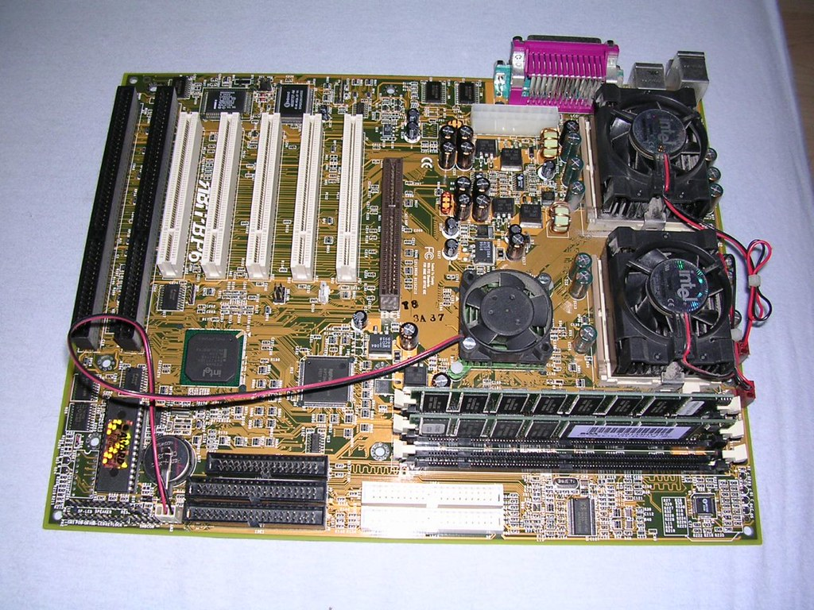

← Listeye Dön
🌐 Resmi Destek

ABIT BP6
Çift işlemci desteğiyle efsaneleşmiş, overclock meraklılarının gözdesi anakart.
Özellik
Değer
Soket
Dual Socket 370
Chipset
Intel 440BX
RAM
4x DIMM Slot (PC100/PC133 SDRAM)
PCI
5x PCI Slot
AGP
AGP 2x Slot
ISA
2x ISA Slot